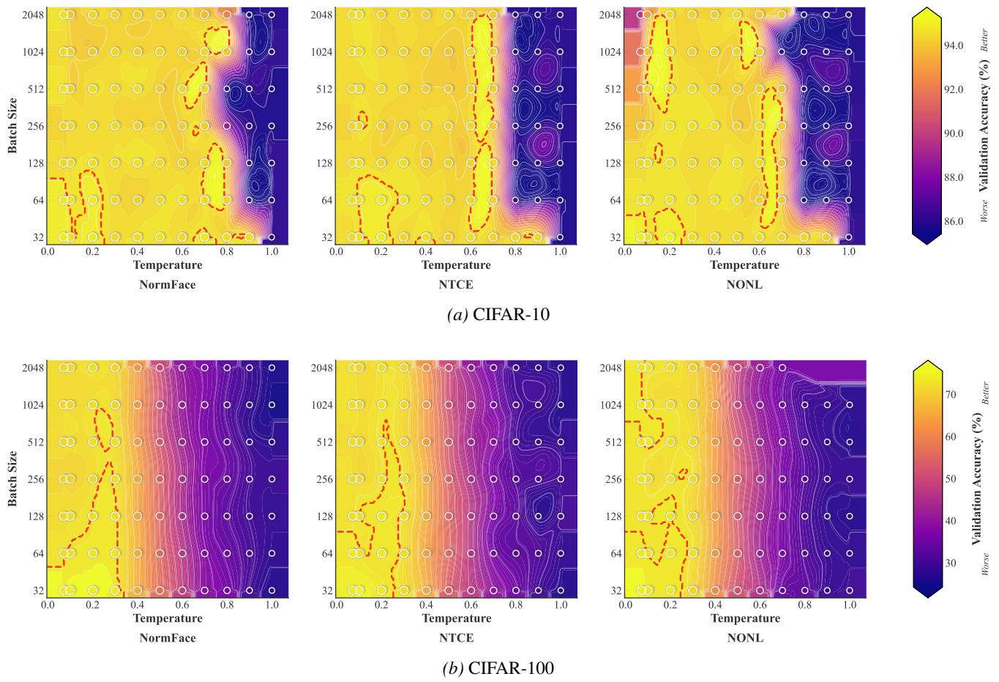

先说结论。监督对比学习和分类原型几何可以统一到单位超球面上的 prototype contrast。 偏理论和监督表征，但对理解 linear probe、原型、均匀性和表征几何有参考价值。
Figure 1Figure 1. Supervised learning as learning class prototypes on the hypersphere. (a) Cross-entropy with unconstrained features z, weights W, and biases b leaves radial degrees of freedom free, preventing convergence to NC. (b) SCL pretraining maps features onto $S ^ { d - 1 }$ via a projection head, producing representations that approach within-class collapse (NC1) and maximal between-class separation (NC2). (c) Standard practice discards the projection head and trains a linear probe on unconstrained z, reintroducing free ∥w∥ and b that destroy the NC geometry learned during pretraining. (d) We show that both paradigms learn class prototypes on the hypersphere, converging to the same simplex ETF. From classifier learning (CL): normalizing to $\bar { \mathcal { S } ^ { d - 1 } }$ and applying contrastive optimization (NTCE/NONL) yields learnable prototypes wˆ c that converge to class means (Theorem 4.1). From SCL: the class-mean prototypes µˆc are already the optimal classifier throughout training, making linear probing unnecessary (Theorem 4.2). Both paths achieve NC1–NC4 in theory and closely approximate it in practice, with $\hat { \mathbf { w } } _ { c } = \hat { \pmb { \mu } } _ { c }$ at the global optimum.

Figure 3Figure 3. Validation Accuracy (%) Phase Diagrams. Classification accuracy on validation set. Higher values indicate better generalization performance. Each subplot shows the performance landscape across temperature and batch size hyperparameters for different loss functions: NormFace, NTCE, and NONL. Brighter regions indicate superior performance. White contour lines indicate iso-performance curves for detailed analysis. Red dashed contours highlight optimal parameter regions (top 10% performance). Scatter points represent individual experimental runs with performance-based sizing. Each dataset uses its own optimal colorbar range. Results originate from grid runs across temperature values in [0.07, 1.0] and batch sizes in 32, 64, 128, 256, 512, 1024, 2048.